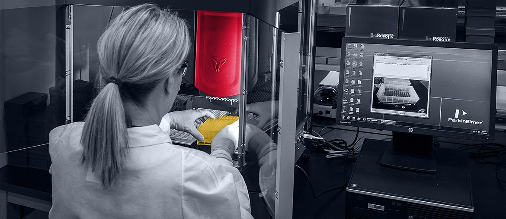

Medical Practice and Billing Software
Healthcare platform work for ONC certification, billing workflows, and third-party integration. Elinext stayed as a long-term partner.
Read case studyCINQCARE is expanding care where Family Members live. The hard part is making Athena, care management, analytics, and provider workflows stay clear as each program grows.
Why we're here: We saw your Senior System Analyst role for Athena EHR, clinical operations systems, workflow mapping, testing, and HL7/FHIR/API work.
The role tells us Athena work is now a delivery blocker. It spans clinical operations, revenue cycle, vendors, testing, and training. That load can slow Grace at Home, Care Medical Practice, and provider onboarding. If workflows stay manual, teams lose time and data trust drops. Akofa's team needs progress before one hire can carry all of it.
We would place a dedicated systems squad under your Operations or IT owner for a six-week pilot.
Map Athena workflows with clinical, operations, revenue cycle, and vendor owners. Mark gaps that block care coordination or reporting.
Design HL7/FHIR/API data paths between Athena, care management, population health, analytics, and ADT feeds, with clear ownership.
Ship the first fixes with QA checks around intake, referrals, documentation, and high-risk handoff paths.
Leave SOPs, training notes, and a handoff backlog for the analyst or internal system owner.
Elinext is a full-cycle software development partner since 1997. We have about 700 in-house specialists, with no freelancers or subcontractors. Our teams cover business analysis, Java, .NET, Python, web, QA, DevOps, and data.
For healthcare work, ISO 27001 and ISO 9001 give a clear security and quality base. That model fits sensitive EHR work because scope, access, and handoff stay controlled. We can start with mapped, de-identified workflows, then move into controlled build access. For CINQCARE, we would act as a named systems squad under your owner.
Healthcare platform work for ONC certification, billing workflows, and third-party integration. Elinext stayed as a long-term partner.
Read case study
Refactored a US healthcare web app for lab workflows. The local corpus lists HIPAA and HL-7 compliance.
Read case study